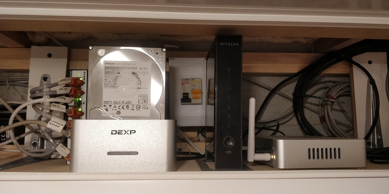
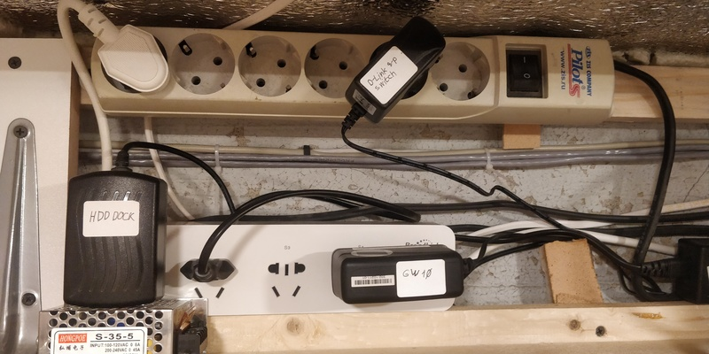
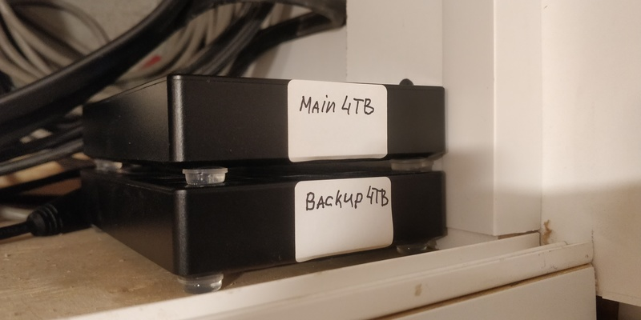
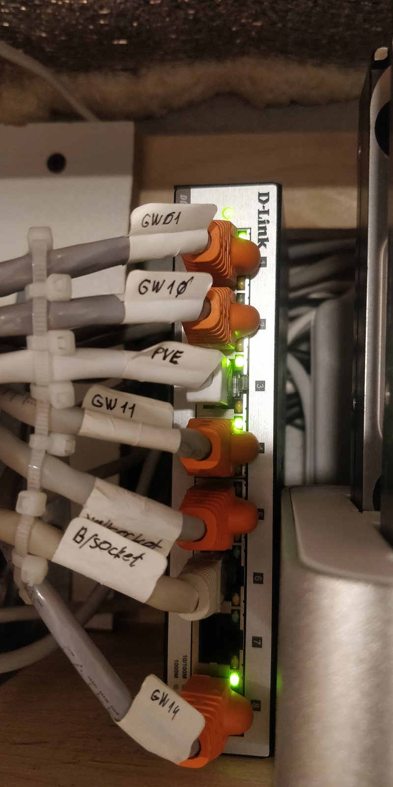
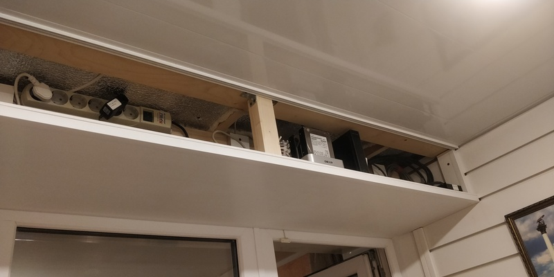
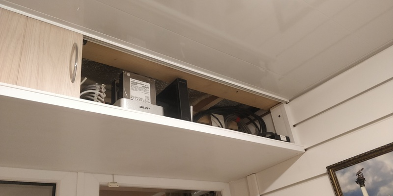
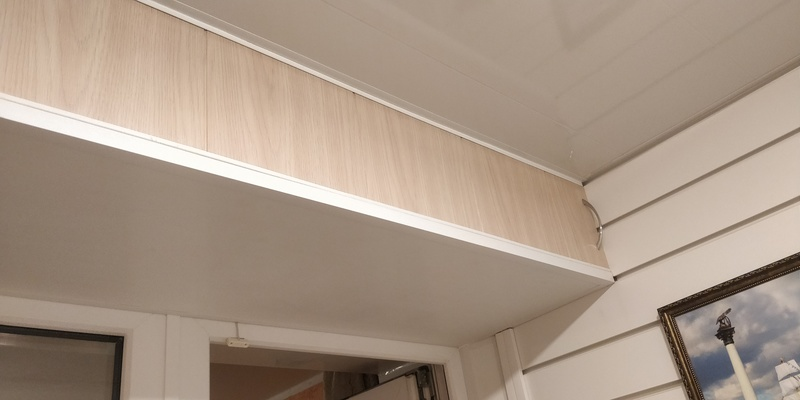

Про оптимизацию, тишину, эволюцию, нестандартные решения и домашнюю сеть.

Достаточно давно я собрал свой первый домашний сервер. И довольно много сил я тогда положил на то, чтобы сделать его как можно более тихим, маленьким и потребляющим минимум энергии. Я сменил радиаторы на процессеоре и северном мосту с целью увеличить площадь рассеивающей поверхности. Я искал самые тихие кулеры, я занижал частоту процессора, я сменил кулер в блоке питания и жёсткий диск я выбирал тоже исходя из теж же требований - тихий и потребляющий минимум энергии. В конце-концов, я переместил свой сервер в диван. Мне тогда нужна была платформа для экспериментов и само-собою подразумевалось, что она будет работать 24 часа, 7 дней в неделю.
Зачем ненормальному человеку может быть нужен сервер? Во-первых, это файлопомойка; во-вторых, это медиакомбайн, соединённый с музыкальным центром и имеющий доступ ко всем твоим аудиозаписям, а заодно и к нескольким десяткам онлайн радиостанций; в-третьих файрвол, позволяющий тонко управлять различными подключениями и роутингом между двумя провайдерами и рабочей сетью; в-четвёртых - VPN; в пятых... Продолжать можно долго.
У меня был свой джаббер сервер с кучей подключенных транспортов, через который я общался при помощи одной программы одновременно с людьми в ICQ, Vkontakte, MSN (да, была пара и таких оригиналов), GoogleTalk, IRC, Skype и том же джаббере. Это было крайне удобно - все люди были распределены по вложенным директориям, находились в одном мессенджере и если я знал какого-то условного Васю, потому что мы с ним учились и в университете и одновременно были коллегами, то Вася находился сразу в двух группах или двух папках, если так проще. Ума не приложу, почему такой прогрессивный мессенджер, как телеграм, не позволяет произвольно группировать контакты? Это же крайне полезная, очевидная и удобная функция, да и в реализации вряд ли она так уж сложна. Только представьте, что вместо VK, Facebook, Skype, Telegram, Viber и Watsup у вас бы стояло всего одно приложение на домашней машине и одно на смартфоне. Пусть, оно не поддерживало бы всех функций (например, звонков в skype), но вы могли бы всегда как минимум написать человеку без необходимости держать зоопарк мессенджеров. В принципе, и сейчас такое возможно, но требует некоторых усилий в реализации.
Так вот, джаббер был тогда тем, чем сейчас является телеграм - прогрессивным мессенджером для гиков. Неудивительно, что под джаббер существовали боты. В том числе ботов тогда писал и я, мне это было интересно. Я мог написать с телефона (да-да, с какого-нибудь Siemens S55 через джаббер ява-клиент) что-нибудь вроде "сделай бекап важного", "поставь металлику, сделай тише на 5", или "включи третий компьютер", бот реагировал ожидаемым образом. Так же он слал мне сообщения со статистикой по батарее на UPS, если в квартире отключали питание.
Были так же и некоторые неочевидные фичи. Раз в минуту бот от моего имени заходил в VK, смотрел статус моей бывшей девушки - в сети ли она, в случае, если она была не в сети и стала online, бот делал запись в базу, останавливал музыку, если таковая проигрывалась через музыкальный центр, запоминал уровень громкости, увеличивал громкость, через синтезатор речи и тот же музыкальный центр произносил фразу о том, что она вышла в сеть и точное время (естественно, учитывая время суток, ночью бот молчал), зажигал зелёный светодиод, приклеенный на скотч к шкафу, отправлял мне сообщение в джаббер, восстанавливал уровень громкости и запускал проигрывание музыки с того же места, на котором остановился. В случае, если девушка была в сети, но вышла, происходил аналогичный процесс, а по запросу статистики, бот символами рисовал график количества часов, проведённых ей в сети на последние две недели. Так как в сеть все тогда преимущественно выходили из дома, то зелёный индикатор на шкафу говорил о том, что девушка уже дома, если же я вернулся с работы и увидел, что зелёного огонька нет, то я звонил ей и спрашивал, не нужно ли забрать её с учёбы и увезти домой. Удобно. Так же начинал писать фичу, но не успел её закончить. По задумке - если текущая дата приближалась к сессии, а девушка в контакте залипала дольше пяти часов в сутки на протяжении более двух дней, её маме должна была уходить смска с подключенного к серверу через COM-порт старого телефона Nokia - "ваша дочь мало готовится к экзаменам, примите меры". Если на работе случалась проблема, то на шкафу загорался уже красный огонёк и синтезатор речи вещал списки IP адресов недоступного сетевого оборудования.
Ну вот, опять ударился в ностальгию. Вернёмся к нашим домашним серверам. С тех пор прошло больше 10 лет. Но только пару лет назад прогресс дошёл до того, о чём я давно мечтал - до бесшумного домашнего сервера за разумные деньги. Интел стала выпускать процессоры современной AMD64 архитектуры по 14-ти нанометровой технологии. Это означает, что их температура заметно снизилась, а эффективность - наоборот, повысилась. Всякие Celeron N3XXX/N4XXX/N5XXX вполне замечательно работают без активного охлаждения, а их энергопотребление позволяет обойтись небольшими и, что самое главное, опять же безвентиляторными блоками питания, такими, какие используются в ноутбуках. Жёстким дискам на смену активно приходят SSD, которые так же можно условно считать бесшумными, особенно если сравнивать с HDD. Производительности какого-нибудь китайского неттопа стоимостью в 12 - 15 тысяч рублей вполне достаточно для любых моих нужд. Docker контейнеры с PET-проектами и пачкой различных сервисов? Пожалуйста! Файлопомойка? Легко - вот вам два гигабитных порта и четыре USB 3.0. Поддержка аппаратной виртуализации для экспериментов с какими-нибудь OpenBSD, Kolibri и чем-нибудь более экзотическим? Так же имеется! И всё это работает тихо! ТИХО, КАРЛ!
Но кроме самого домашнего сервера нужно было ещё и что-то, во что он будет подключен. Мне хотелось нормальной управляемой сети с вланами. Раньше у меня был гигабитный управляемый 24-х портовый коммутатор второго уровня. Это был стоечный 19'' гроб, который в глубину был несущественно меньше, чем в ширину. Под ним вполне можно вдвоём укрыться от дождя, а если учитывать его вес, пожалуй, им можно было бы прикрыться и от автоматной очереди не особо опасаясь за своё здоровье. Коммутатор при старте продувал вентиляторы и если при этом закрыть глаза, складывалось ощущение, что ты стоишь посреди взлётной полосы, а на тебя разгоняясь движется взлетающий тяжёлый бомбардировщик. Обошёлся он мне тогда примерно как крыло от вышеупомянутого бомбардировщика. Через несколько секунд коммутатор снижал обороты кулеров, но слышно его было из любой точки квартиры, даже когда он стоял на балконе. Под этот девайс и ещё под несколько других мне пришлось из гуано и веточек уголков перфорированного стеллажа при помощи болагрки и какой-то матери смастерить серверную стойку, которая занимала примерно четверть балкона.
На этот же новый год жена сделала мне подарок - гигабитный управляемый коммутатор второго уровня, который умещается на ладони, кушает 5 вольт 1 ампер и не издаёт никаких звуков! Уровень счастья зашкалил! Но оно не было бы полным, если бы не новая "микросерверная" на балконе.
Не так давно я закончил ремонт на балконе. Точнее, я как ужаленный генерировал нестандартные идеи и решения, а наш ремонтник смотрел на меня глазами полными печали и тоскливо спрашивал "Евгений, а может быть просто ремонт, а?". Одним из таких нестандарных решений как раз оказалось место под множество моих железок. Над входом на балкон по всей ширине была сделана полка, закрывающаяся сдвижными дверками. Ширина и высота полки были тщательно высчитаны так, чтобы она не закрывала из комнаты обзор через окно балкона, не мешала, чтобы к ней был лёгкий доступ, а так же на эту полку заходит из большой комнаты три штробы под провода для будущего управления умным домом, а заодно и сеть. И вот, сегодня звёзды сошлись и я наконец-то ввёл в строй новый коммутатор и перенёс сервер. То, что раньше занимало кучу места, уместилось на одной половине одной полки! Одну фотографию результата я поставил в начало поста, остальные тут:

Снизу - отличная вещь, которая стОила бы отдельного поста, но если уж она попалась тут, расскажу о ней вкратце. Это Broadlink MP1 - управляемый блок из 4-х розеток. Каждая розетка управляется отдельно, работает через Wi-Fi, то есть, гейты ей не нужны, вместо гейта можно использовать любую *Pi, или в моём случае - домашний сервер. Конечно, у Broadlink есть своё приложение для телефона, но добрые люди смогли реверс инжинирингом разобрать протокол передачи данных и теперь этим и некоторыми другими устройствами Broadlink можно пользоваться напрямую с помощью того же Python. Ниже приведу пример использования:
#!/usr/bin/env python
# -*- coding: utf-8 -*-
import sys
import broadlink
mp1 = broadlink.mp1(host=('10.11.11.18', 80), mac=bytearray(b'Z#\xc1\rC\xb4'))
if mp1.auth():
if len(sys.argv) > 1:
for a in sys.argv[1:]:
if type(a) == str and len(a) == 2:
if a[0] == '+':
mp1.set_power(int(a[1]), True)
elif a[0] == '-':
mp1.set_power(int(a[1]), False)
stat = mp1.check_power()
ks = stat.keys()
ks.sort()
res = ''
for s in ks:
if stat[s]:
res += '+' + s[1] + ' '
else:
res += '-' + s[1] + ' '
print res.strip()
else:
sys.stderr('ERROR: Can\'t auth on Broadlink MP1\n')
sys.exit(1)
sys.exit()
Уже давно мой сервер по расписанию включает через этот блок розеток док с жёсткими дисками, проверяет файловую систему, прогоняет смарт тест, монитирует разделы, делает на них все необходимые бекапы и затем выключает док. В итоге уже побитые жизнью жёсткие диски используются для второго резервного автоматического бекапа и работают не 24 часа 7 дней в неделю, грея воздух и издавая шум, а всего лишь 15 минут в неделю, что должно увеличить их ресурс в таком режиме на много лет. Так же к серверу подключен один 2.5'' жёсткий диск от сигейт на 4 терабайта и ещё один такой же резервный лежит под ним. При подключении usb (у меня уже есть пара идей о том, как это можно автоматизировать) резервного диска, через udev запускается другой скрипт, который делает все нужные проверки и бекапы. Так как резервный диск работает недолго, то для наименьшего нагрева основного, я поместил резервный под него и использовал силиконовые ножки из хозмага для создания пространства между ними.

Упомянутый выше коммутатор крупным планом:

Вот как всё выглядит со снятыми для удобства монтажа дверцами:

Дверца открыта:

Дверца закрыта:

Мне кажется, именно умение мыслить нестандартно позволяет делать самые интересные вещи и менять нашу жизнь к лучшему.
Теги: админское, automatization, networking, python